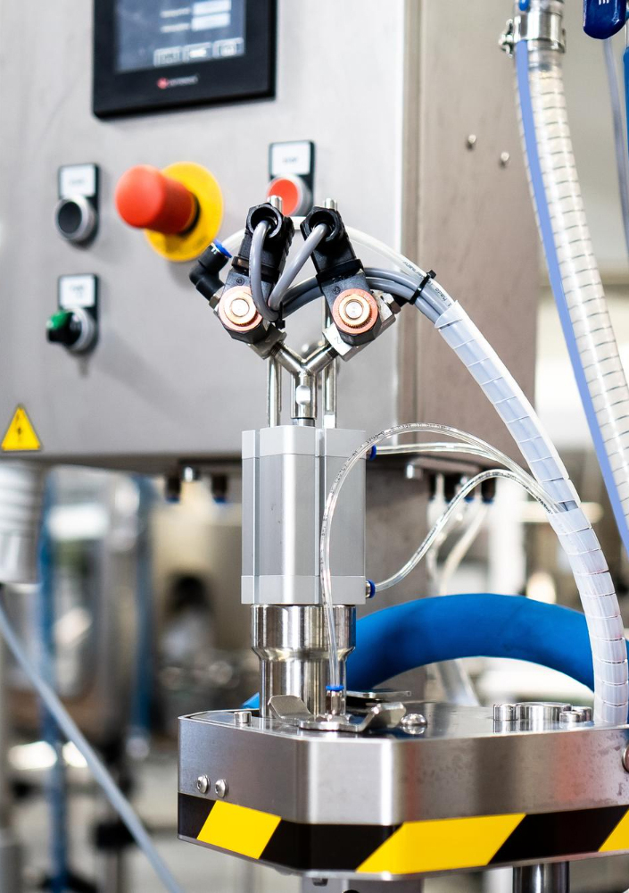
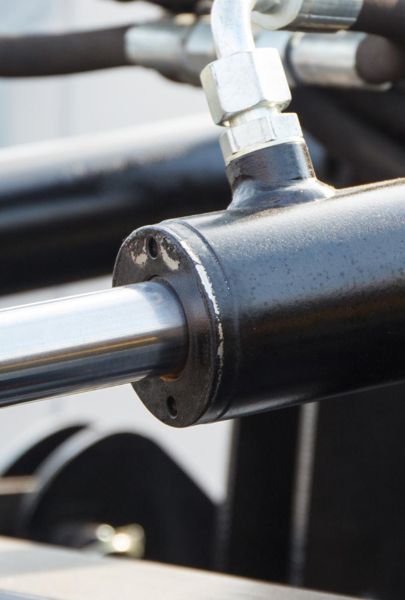
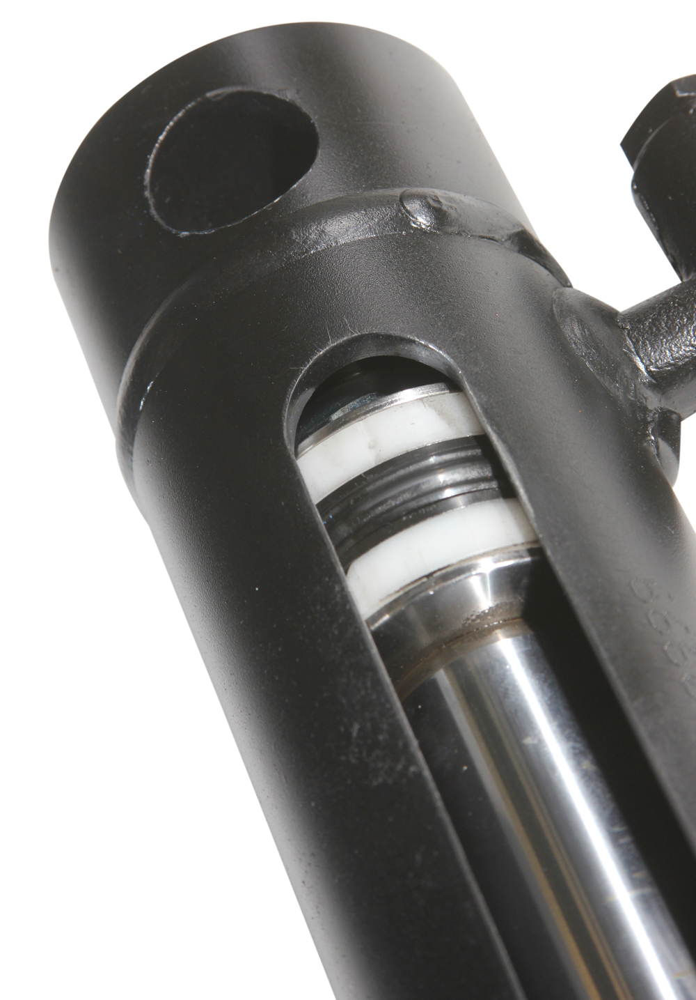
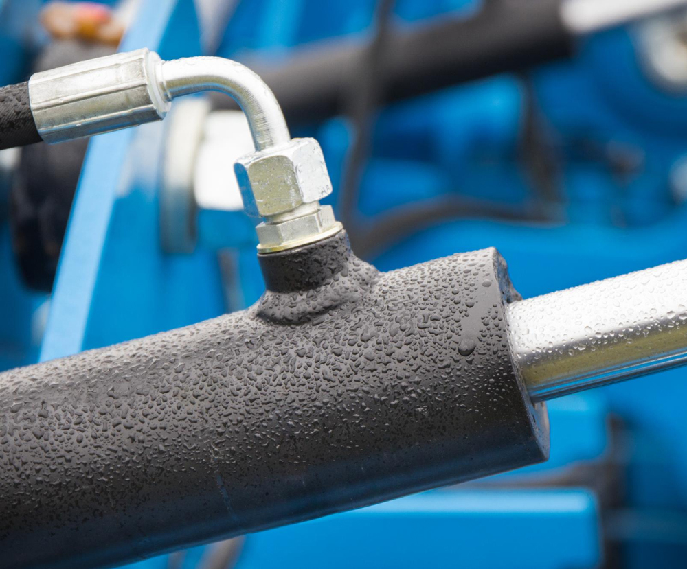
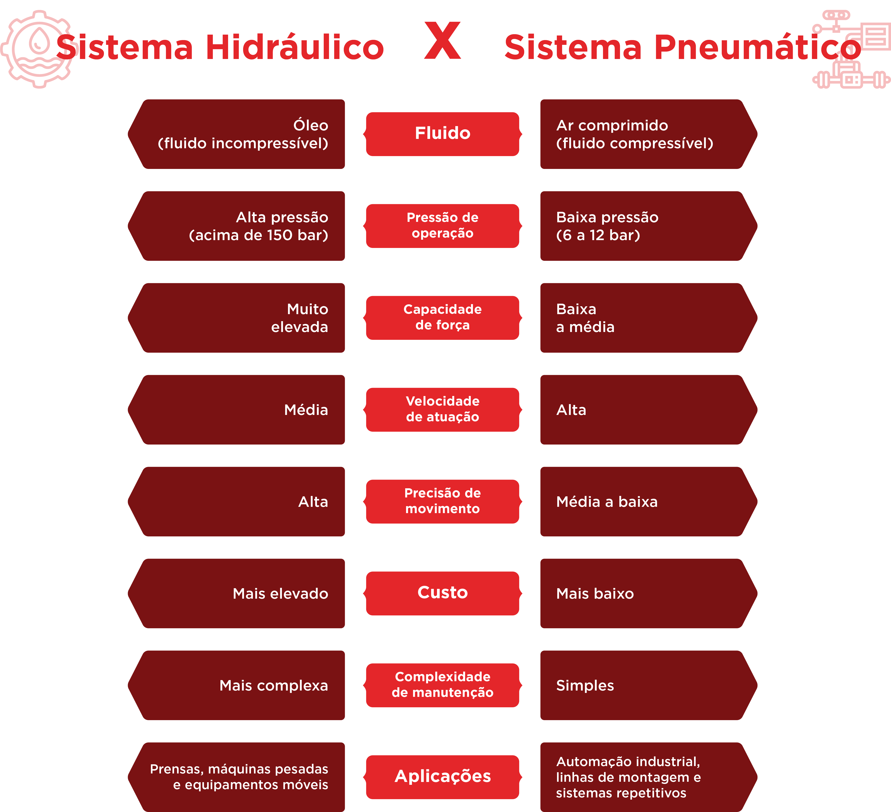

Introdução aos sistemas fluido-mecânicos



Nesta aula, os seguintes tópicos serão explorados:
tópico
Tópico 1: Conceitos fundamentais e aplicações industriais
tópico
Tópico 2: Princípios físicos dos sistemas fluido-mecânicos
tópico
Tópico 3: Comparação entre sistemas hidráulicos e pneumáticos


Conceitos fundamentais e aplicações industriais
Olá, estudante! Seja bem-vindo(a) ao estudo sobre sistemas hidráulicos e pneumáticos, esse conteúdo é muito importante para seu futuro profissional, mas antes de iniciar o estudo, uma curiosidade...
Você sabia que os sistemas hidráulicos e pneumáticos fazem parte de um campo fundamental da engenharia responsável por utilizar fluidos — líquidos ou gases — como meio de transmissão de energia?
Interessante, não é? Grande parte da automação industrial é realizada não apenas por motores elétricos, mas também por sistemas pneumáticos, quando se busca velocidade, e por sistemas hidráulicos, quando há necessidade de aplicação de forças elevadas.

Para compreender como esses sistemas funcionam, é importante iniciar pelos conceitos essenciais que sustentam sua operação, suas aplicações e os motivos pelos quais são amplamente utilizados na indústria moderna. Embora cada tecnologia possua características próprias, ambas compartilham a mesma finalidade: converter energia em movimento de forma controlada, eficiente e segura. Vamos lá?
Potência fluida: a base dos sistemas hidráulicos e pneumáticos
Os autores Daines e Daines (2018) definem o termo “potência fluida”, que se refere ao uso de fluidos sob pressão para transmitir e controlar energia mecânica. Essa energia é convertida em movimento linear ou rotativo por meio de atuadores, permitindo realizar trabalhos que exigem força, precisão ou repetitividade.
Existem duas modalidades principais:
- Hidráulica: utiliza óleo hidráulico (fluido incompressível).
- Pneumática: utiliza ar comprimido (fluido compressível).

Essas tecnologias possibilitam movimentar cargas, controlar mecanismos, automatizar processos e realizar operações repetitivas com alta confiabilidade.
A escolha entre um sistema ou outro estará relacionada ao tipo de aplicação, ao ambiente operacional e às exigências de força, precisão e velocidade (Filho; Santos, 2018).
Para que servem os sistemas hidráulicos e pneumáticos?
Esses sistemas estão presentes em praticamente todos os setores industriais. Filho e Santos (2018), Prudente (2015) e Netto e Fernández (2017) definem exemplos reais que ajudarão você a visualizar essas aplicações:
Aplicações típicas da hidráulica
A hidráulica é preferida quando a operação exige altas forças, controle preciso e robustez operacional.
Algumas aplicações comuns incluem:
- Prensas hidráulicas para conformação metálica.
- Máquinas injetoras de plástico.
- Equipamentos móveis (retroescavadeiras, tratores, guindastes).
- Elevadores de carga e plataformas niveladoras.
- Máquinas-ferramenta que exigem precisão no posicionamento.
A capacidade da hidráulica de operar com altas pressões, frequentemente acima de 150 bar, faz dela a escolha ideal para trabalhos de elevada carga.
Aplicações típicas da pneumática
Já a pneumática destaca-se pela velocidade, simplicidade e baixo custo de operação, além de ser extremamente segura em ambientes onde não pode haver contaminação.
Aplicações recorrentes:
- Linhas de montagem automatizadas.
- Manipuladores industriais e sistemas pick-and-place.
- Portas automáticas industriais.
- Sistemas de empacotamento e rotulagem.
- Operações rápidas de repetição em fábricas de alimentos e bebidas.
O ar comprimido é abundante, limpo e fácil de transportar, explicando sua popularidade na automação industrial.

Equipamento industrial
Observe um equipamento industrial próximo a você, ou em sua casa, e tente identificar quais elementos do sistema de potência fluida ele contém. Consegue reconhecer a geração, distribuição e atuação?
Por que a indústria usa potência fluida?
A escolha pela hidráulica ou pneumática não acontece por acaso. Autores como Netto e Fernández (2018) e Prudente (2015) citam que esses sistemas oferecem vantagens que justificam seu uso em larga escala.
Dentre as vantagens da hidráulica, tem-se:
- Geração de altíssimas forças mesmo com atuadores compactos.
- Controle fino de velocidade e posição.
- Operação estável mesmo em cargas variáveis.
- A utilização de óleo que lubrifica e reduz desgaste interno.
- Aplicação em máquinas de precisão e alta rigidez.
Já para as vantagens da pneumática, tem-se:
- Movimentos rápidos e repetitivos com baixo custo.
- Componentes simples e robustos.
- Segurança em ambientes sensíveis (não contamina).
- Capacidade de armazenar energia (reservatórios de ar).
- Boa relação custo-benefício.
- Fácil manutenção.
As desvantagens também serão analisadas no Tópico 3, quando compararmos diretamente os dois sistemas.
O estudo realizado por Herrera et al. (2020) indica que os sistemas pneumáticos possuem ampla presença na indústria moderna, especialmente em aplicações automatizadas. De acordo com os dados consolidados do estudo, aproximadamente 10% de toda a energia elétrica consumida na indústria europeia é destinada à produção de ar comprimido, evidenciando a forte utilização de sistemas pneumáticos em processos industriais automatizados.
Interdisciplinaridade da potência fluida
Como todo conceito aplicado, a potência fluida não atua isolada; ela se integra a diversas áreas (Fialho, 2011), como:
- Mecânica: no dimensionamento de movimentos e forças.
- Eletrônica / Eletrotécnica: com sensores e comandos.
- Informática / Automação: por meio de controladores lógicos e sistemas supervisórios.
- Materiais: na seleção de componentes adequados.
Essa integração de saberes é o que torna a automação industrial contemporânea tão eficiente e flexível.
Essa interdisciplinaridade será abordada em aulas posteriores, quando for necessário dimensionar componentes de geração, tratamento e armazenamento de ar, tal como a automação pneumática.
Compreendida a importância dos sistemas hidráulicos e pneumáticos, suas aplicações industriais e o papel da potência fluida na automação, surge uma questão fundamental: por que esses sistemas se comportam de forma tão diferente em termos de força, velocidade e precisão.
Para responder a essa pergunta, no próximo tópico estudaremos os princípios físicos dos sistemas fluido-mecânicos, analisando como pressão, vazão e o comportamento dos fluidos influenciam diretamente o desempenho desses sistemas.
Os sistemas hidráulicos e pneumáticos utilizam fluidos como meio de transmissão de energia e pertencem a qual área da engenharia?
- Mecânica estrutural.
- Sistemas elétricos industriais.
- Potência fluida.
- Automação digital.
- Processos térmicos.
A alternativa C é a correta.
Justificativa: Hidráulica e pneumática fazem parte da potência fluida, que utiliza fluidos sob pressão para transmitir energia.

Princípios físicos dos sistemas fluido-mecânicos
Estudante, agora que você já compreendeu onde os sistemas hidráulicos e pneumáticos são aplicados e por que eles são tão importantes na indústria, é hora de responder a uma pergunta essencial: o que faz esses sistemas funcionarem do ponto de vista físico?
Por que um cilindro hidráulico consegue levantar cargas extremamente elevadas, enquanto um sistema pneumático se destaca pela rapidez, mas não pela mesma capacidade de força?
A resposta para essas diferenças está nos princípios físicos que governam o comportamento dos fluidos sob pressão.

Os sistemas fluido-mecânicos são fundamentados em conceitos clássicos da mecânica dos fluidos, amplamente discutidos por autores como White (2018), Netto e Fernández (2017) e Godoi e Assunção (2019). Esses princípios explicam como a energia é transmitida, transformada e controlada quando um fluido está em repouso ou em movimento.
Neste tópico, você estudará os conceitos de pressão, vazão, energia no fluido e perdas, que servirão de base para o entendimento dos componentes e circuitos abordados nas próximas aulas.
Pressão: a origem da força nos sistemas fluido-mecânicos
Vamos começar pelo conceito mais importante, a pressão.
Segundo White (2018), a pressão é definida como a razão entre uma força aplicada e a área sobre a qual essa força atua, conforme a relação:
\[P = \dfrac{F}{A}\]
em que \(P\) é a pressão aplicada ao fluido (Pa ou bar), \(F\) é força aplicada perpendicularmente à superfície (N) e \(A\) é a área sobre a qual a força é distribuída (m²).
No Sistema Internacional de Unidades (SI), a pressão é expressa em pascal (Pa), sendo comum, na prática industrial, a utilização da unidade bar, onde \(1\ \text{bar} = 10^5\ \text{Pa}\).
Esse conceito simples explica por que os sistemas hidráulicos podem gerar forças tão elevadas. Como o óleo hidráulico é considerado praticamente incompressível, a pressão aplicada ao fluido é transmitida de forma eficiente por todo o sistema.
Na prática industrial, sistemas hidráulicos operam frequentemente com pressões acima de 150 bar, podendo chegar a valores ainda maiores em aplicações específicas, como prensas e equipamentos móveis (Filho; Santos, 2018).
Já nos sistemas pneumáticos, a pressão de trabalho é significativamente menor, normalmente entre 6 e 12 bar. Ainda assim, essa pressão é suficiente para uma grande variedade de aplicações automatizadas, especialmente quando o foco está na velocidade e na repetitividade (Fialho, 2011).
Vazão: controlando a velocidade do movimento
Agora pense no seguinte cenário: dois cilindros operam com a mesma pressão, mas apresentam velocidades diferentes. O que muda?
Nesse caso, o fator determinante é a vazão, que representa o volume de fluido que escoa por um ponto do sistema em um determinado intervalo de tempo (Rollins, 2004), de acordo com a equação:
\[Q = \dfrac{V}{t}\]
em que \(Q\) é a vazão volumétrica do fluido (m³/s ou L/min), \(V\) é o volume de fluido deslocado (m³ ou L) e \(t\) é o tempo necessário para o escoamento (s ou min).
Perceba que dependendo da unidade utilizada para o volume e tempo, a vazão apresenta resultados também com unidades diferentes.
Enquanto a pressão define a força, a vazão define a velocidade do movimento.
Na prática:
- Maior vazão → maior velocidade do atuador;
- Menor vazão → movimentos mais lentos e controlados.
Esse conceito é fundamental para:
- Dimensionar bombas e compressores.
- Selecionar válvulas adequadas.
- Ajustar tempos de ciclo em sistemas automatizados.
É comum, no início dos estudos, confundir pressão com vazão. Por isso, vale reforçar que pressão gera força e vazão controla a velocidade.
Energia no fluido e conversões de energia
Os sistemas hidráulicos e pneumáticos não criam energia; eles realizam conversões de energia, em conformidade com a lei da conservação da energia.
De forma simplificada, ocorre a seguinte sequência:

Energia elétrica
Motor elétrico.
Energia mecânica
Bomba ou compressor.
Energia de pressão
Fluido pressurizado.
Energia mecânica novamente
Movimento no atuador.
No caso da pneumática, esse processo envolve a compressão do ar, gerando aquecimento e perdas energéticas durante a expansão. Já na hidráulica, a transmissão da energia ocorre de forma mais uniforme, proporcionando maior rigidez e controle do movimento (Filho; Santos, 2018).
Essas diferenças explicam por que a hidráulica é preferida para aplicações que exigem precisão e força, enquanto a pneumática é amplamente utilizada em operações rápidas e repetitivas.
Perdas e resistências nos sistemas fluido-mecânicos
Nenhum sistema fluido-mecânico opera sem perdas. Essas perdas estão associadas principalmente ao atrito, a vazamentos e a restrições ao escoamento.
Para White (2018) e Netto e Fernández (2017), em sistemas hidráulicos, as perdas mais comuns estão relacionadas a:
- Atrito do fluido nas tubulações.
- Vazamentos internos em bombas e válvulas.
- Aquecimento do óleo.
- Resistências em filtros, curvas e conexões.
Já Fialho (2011) e Prudente (2015) definem que, para perdas em sistemas pneumáticos, destacam-se:
- Vazamentos externos de ar comprimido.
- Perdas associadas à compressibilidade do ar.
- Quedas de pressão ao longo da rede.
- Presença de umidade e partículas sólidas.
Essas perdas impactam diretamente a eficiência energética e o desempenho dos sistemas pneumáticos, justificando a necessidade de um correto projeto das redes, do tratamento adequado do ar comprimido e da manutenção preventiva.
Compreender essas perdas é essencial para projetar sistemas mais eficientes, reduzir custos operacionais e aumentar a vida útil dos componentes. Mas isso será discutido mais detalhadamente ao longo dos próximos conteúdos.
Conexão
Para aprofundar esses conceitos, recomenda-se a leitura de White (2018), que aborda detalhadamente os princípios da mecânica dos fluidos aplicados a sistemas industriais, com ênfase nos efeitos da compressibilidade e das perdas de energia.
Compreendidos os princípios físicos que regem o funcionamento dos sistemas fluido-mecânicos, torna-se possível avançar para uma análise comparativa.
No próximo tópico, serão comparados diretamente os sistemas hidráulicos e pneumáticos, destacando suas vantagens, limitações e critérios de escolha, de modo que você consiga identificar qual tecnologia é mais adequada para cada aplicação industrial.
Em sistemas pneumáticos utilizados na automação industrial, o fluido de trabalho empregado é:
- Água pressurizada.
- Óleo mineral.
- Fluido sintético.
- Ar comprimido.
- Gás refrigerante.
A alternativa D é a correta.
Justificativa: A pneumática utiliza o ar comprimido como fluido de transmissão de energia.
Comparação entre sistemas hidráulicos e pneumáticos
Estudante, agora que você já compreendeu os conceitos fundamentais da potência fluida e os princípios físicos que governam o comportamento dos fluidos sob pressão, chegou o momento de responder a uma pergunta prática e muito comum no ambiente industrial: quando utilizar um sistema hidráulico e quando optar por um sistema pneumático?

Embora ambos utilizem fluidos como meio de transmissão de energia, os sistemas hidráulicos e pneumáticos apresentam diferenças significativas em termos de comportamento, desempenho, custo e aplicação. A escolha correta entre essas tecnologias influencia diretamente a eficiência, a segurança e a confiabilidade de um sistema industrial.
Diferenças fundamentais entre hidráulica e pneumática
A principal diferença entre os dois sistemas está no tipo de fluido utilizado e, consequentemente, no seu comportamento físico.
Nos sistemas hidráulicos, utiliza-se um fluido praticamente incompressível, geralmente óleo hidráulico. Isso permite a transmissão direta da energia, com alta rigidez e grande capacidade de geração de força.
Já nos sistemas pneumáticos, o fluido utilizado é o ar comprimido, que é compressível. Essa característica confere maior elasticidade ao sistema, possibilitando movimentos rápidos, porém com menor precisão quando comparados à hidráulica.
Autores como Filho e Santos (2018) e Fialho (2011) destacam que essas diferenças tornam cada tecnologia mais adequada a determinados tipos de aplicação.
Comparação de desempenho e características operacionais
Do ponto de vista operacional, é possível comparar os dois sistemas considerando alguns critérios fundamentais:
Força:
- Sistemas hidráulicos podem gerar forças muito elevadas, sendo indicados para prensas, equipamentos móveis e máquinas de grande porte.
- Sistemas pneumáticos, por operarem com pressões mais baixas, são indicados para cargas leves e médias.
Velocidade:
- A pneumática se destaca pela rapidez de resposta e pela facilidade de realizar movimentos repetitivos em curtos intervalos de tempo.
- A hidráulica, embora mais lenta em alguns casos, oferece maior controle do movimento.
Precisão e controle:
- Devido à incompressibilidade do óleo, os sistemas hidráulicos apresentam maior precisão de posicionamento e estabilidade.
- Já os sistemas pneumáticos apresentam menor precisão, especialmente em baixas velocidades.
Custo e manutenção:
- Sistemas pneumáticos possuem menor custo inicial e manutenção mais simples.
- Sistemas hidráulicos exigem maior investimento e cuidados adicionais com vedação, contaminação e temperatura do fluido.
Outro fator importante na escolha da tecnologia está relacionado à segurança e ao ambiente de operação.
A pneumática é amplamente utilizada em ambientes onde a limpeza e a segurança são essenciais, como indústrias alimentícias, farmacêuticas e eletrônicas, pois o ar comprimido não contamina o ambiente em caso de vazamento (Filho; Santos, 2018).
A hidráulica, por utilizar óleo, requer maior atenção quanto a vazamentos e descarte de fluidos, porém oferece maior confiabilidade em aplicações críticas e de alta carga (Netto; Fernández, 2017).
Estudos práticos de aplicação industrial
Para compreender objetivamente a escolha entre sistemas hidráulicos e pneumáticos, é útil observar situações práticas recorrentes na indústria, nas quais os critérios técnicos estudados se manifestam claramente.
Em operações que exigem altas forças e controle preciso, como prensas para conformação metálica, a utilização de sistemas hidráulicos é a solução mais adequada. A incompressibilidade do óleo permite a transmissão eficiente da energia, garantindo estabilidade e manutenção da força durante todo o ciclo de trabalho, conforme destacado por Filho e Santos (2018) e Netto e Fernández (2017).
Já em linhas de montagem automatizadas, onde predominam movimentos rápidos, repetitivos e com cargas leves, os sistemas pneumáticos apresentam vantagens significativas. A simplicidade construtiva, a rapidez de resposta e o baixo custo de manutenção tornam a pneumática amplamente utilizada nesses processos, como apontam Fialho (2011) e Prudente (2015).
Em máquinas pesadas e equipamentos móveis, como escavadeiras e guindastes, a hidráulica novamente se destaca por sua robustez e elevada capacidade de geração de força em espaços reduzidos, sendo a tecnologia predominante nesse tipo de aplicação (Lima, 2022; Souza, 2011).
Por fim, em ambientes que exigem alto nível de limpeza e segurança, como as indústrias alimentícia e farmacêutica, os sistemas pneumáticos são preferidos, pois o ar comprimido não contamina o produto em caso de vazamento, além de facilitar os processos de higienização (Rollins, 2004).
Esses exemplos reforçam que a escolha entre hidráulica e pneumática depende diretamente das exigências da aplicação, não havendo uma tecnologia superior em todos os cenários.
Síntese comparativa
O infográfico a seguir apresenta um comparativo resumido entre os sistemas hidráulicos e pneumáticos, auxiliando na tomada de decisão em projetos industriais.

Essa comparação reforça que não existe um sistema melhor em todos os aspectos, mas sim tecnologias adequadas a diferentes necessidades.
É isso aí!
Ao longo desta primeira aula, você percorreu os fundamentos essenciais para compreender os sistemas hidráulicos e pneumáticos. Viu que esses sistemas vão muito além de simplesmente gerar movimento: eles envolvem conceitos físicos, escolhas técnicas, critérios de aplicação e decisões estratégicas que impactam diretamente o desempenho industrial.
Compreender onde esses sistemas são aplicados, como funcionam do ponto de vista físico e quais são suas principais diferenças é o primeiro passo para avançar no estudo de componentes, circuitos e métodos de automação.
Nos próximos conteúdos, estudante, você irá aprofundar esses conhecimentos, explorando as características do ar comprimido, as leis dos gases e os processos envolvidos na geração e no tratamento do ar.
Até lá e bons estudos!
Qual das situações a seguir justifica mais adequadamente o uso de um sistema hidráulico?
- Aplicações que exigem grandes forças.
- Ambientes que exigem elevada limpeza.
- Movimentos rápidos com baixa carga.
- Sistemas de baixo custo e simples manutenção.
- Processos com alta repetitividade.
A alternativa A é a correta.
Justificativa: A hidráulica é indicada quando há necessidade de geração de grandes forças e maior precisão.
Sua próxima etapa é assistir à videoaula, onde você poderá ver os conceitos em ação e ampliar sua compreensão. Essa é uma ótima oportunidade para reforçar o aprendizado.
Assista a videoaula
DAINES, J. R.; DAINES, M. J. Fluid Power: Hydraulics and Pneumatics. 3. ed. Tinley Park: Goodheart-Willcox, 2018.
FIALHO, A. B. Automação pneumática: Dimensionamento e análise de circuitos. 7. ed. São Paulo: Érica, 2011.
FILHO, E. S. D. S.; SANTOS, B. K. Sistemas hidráulicos e pneumáticos. Porto Alegre: Sagah, 2018.
GODOI, P. J. P. M.; ASSUNCAO, G. S. C. Mecânica dos fluidos. Porto Alegre: Sagah, 2019.
HERRERA, H. H. et al. Energy Savings Measures in Compressed Air Systems. International Journal of Energy Economics and Policy, Mersin, v. 10, n. 3, p. 414-422, maio 2020.
LIMA, E. P. C. Mecânica das bombas: hidráulica, bombas centrífugas, alternativas e rotativas. 3. ed. Rio de Janeiro: Interciência, 2022.
NETTO, J. M. A.; FERNÁNDEZ, M. F. Manual de hidráulica. 9. ed. São Paulo: Blucher, 2017.
PRUDENTE, F. Automação industrial pneumática: Teoria e aplicações. Rio de Janeiro: LTC, 2015.
ROLLINS, J. P. Manual de ar comprimido e gases. 1. ed. São Paulo: Pearson, 2004.
SOUZA, Z. Projeto de máquinas de fluxo: tomo 2 - bombas hidráulicas com rotores radiais e axiais. Rio de Janeiro: Interciência, 2011.
WHITE, F. M. Mecânica dos fluidos. Tradução de Gelson Maia Santos. 8. ed. Porto Alegre: AMGH, 2018.
Parabéns!
Você acaba de concluir uma etapa importante da sua jornada. Agora é hora de seguir em frente!